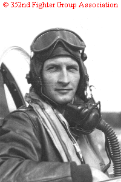
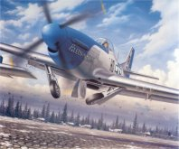
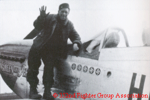

1st Lt. Alden P. Rigby
Born: Born January 4, 1923 - Fairview, Utah.
Y-29 Victories: 4
WWII Victories: 6
Final WWII Rank: 1st Lt.
Post WWII Service: 3 years active duty during the Korean conflict
with
the 33rd Air Division in the Air Defense Command. 25 years with the FAA
(Federal Aviation Administration), Retired 1979. 25 years in the
Utah Air
National Guard, Retired in 1979 at the rank of Major.
Air Medal with 7 oak leaf clusters.
Distinguished Unit Citation (487th Fighter Sqdn.)
WWII-BELGIUM
1945.
From
the Memoirs of 1st Lt. Alden P. Rigby, 487th fighter Sqdn. 352nd Fighter
group.
The
next real excitement came on December 23rd. Twelve pilots from our Sqdn.
were to take-off for a forward base in Belgium. We would leave as soon as we
could fight our way through the fog, which had not lifted in some 9 days. The
storage compartment in the P-51 limited baggage to bare essentials. This would
not be a problem, since we anticipated being back in England within 10 days at
most (wrong!!). Three flights of 4 A/C each departed at 15-minute intervals
because of the fog on the Continent. I was in the 2nd flight off at
mid-afternoon. This did not leave much time for finding the field Y- 29, built
or captured only weeks before. This would be the first trip across the Channel
for my new aircraft, with only 1 test-hop earlier. We took only an internal
load of fuel (about 3 hours). We also took a full load of ammunition for the 6
guns.
The
visibility through the fog and haze from high altitude did not look too bad,
but trying to find the field from low altitude was difficult. We took more
time and fuel than we had planned. We gave up with enough of each to get back
to Antwerp, where the weather was reported to be a little better. The landing
at dusk, and on the huge concrete runway was even eventful. Parking on the
opposite side of the field from the British Spitfire squadron was a good move.
As I was standing on the wing, taking off my Mae West, (life preserver) a V-2
rocket tore apart some of the Spitfires. Enough of the debris was in the air,
that I took refuge under the wing. My first thoughts, (after my own safety)
were about my new aircraft. To have it damaged before even 1 hour of combat,
was not a happy thought. The jeep ride to downtown Antwerp with the British
driver, brought perhaps the most sobering moments of the war for me. We
stopped for a few moments at the smoldering ruins that had earlier in the day
been a theater, and a Christmas party for children. The casualty count from
the German V-1 buzz bomb was near 100 of the 150 attending. The 4 of us had
seen a lot of destruction from the air, but such a close-up brought humility,
and then anger to a flight of 4 young, and confident American Fighter Pilots.
Sleep did not come easy at the hotel, which was one of the few buildings left
standing. "Buzz bomb alley" that we had heard so much about, was,
now a reality.
Each
year at Christmas time, for some 43 years following the war, I would give
thought to this scene, and the peace loving people of Belgium. I mention 43
years because in 1987 Eleen and I returned to that area for a short visit.
Upon seeing the progress, and peaceful prosperity that existed on this visit,
I determined that those good people had come so far, after such devastation,
that it was past time for me to change my thinking. If they, who were so
plundered by both sides during the war, could rise above such adversity, then
it was finally time for me to think positive about their times of trial.
The
hotel was good, but I was too drained emotionally, and physically to enjoy the
good food, or even the makeshift floor show. Buzz bombs could be heard during
the night, but we were too tired to pay much attention. We used to joke that
if any had our name on it, there would be no need to get out of the way, or
even worry. We had an early, but good breakfast before taking off for "Asch."
The 30-minute ride, with an additional 15 minutes to find the field was
uneventful. The fog was still there, and it took some help from the ground
radar unit. We were just a little shocked at what we were getting into. The
first landing on the steel mats brought more of a rumble than expected. The
tents, foxholes, the big guns sounding off not far to the East, and "Bed
check Charlie" confirmed that "there is a war going on over
here." The P-47 pilots on the other side of the field were being
hard pressed, and were glad to see us. It could have been that "misery
loves company." While they were busy flying two short support
missions, we tried to settle in. Six men to a tent, hard camp cots, a small
pot bellied stove, and freezing weather was no picnic. Keeping warm was a big
item. We even rigged a gas/oil mixture line to the stove, which meant more
risk than heat. Our crew chiefs had arrived earlier in the day, and had dug a
few foxholes by the aircraft parking stands. The big guns could easily be
heard, so we knew something about the front lines from ground level. Flying
from England, and having our comfortable quarters there was being missed
already.
Christmas
Eve went almost unnoticed, except for thoughts of home and my family. I also
thought of the people of Belgium that would have their first free Christmas in
some 4 years. The only happy thought was, that next year would be much better.
The German JU-88 bomber made his usual run, dropping a bomb on the edge of the
field. The P-47 pilots had briefed us that "Bed Check Charlie" was
more of a nuisance than anything. My first night with the 9th AF ended in
misery. Even though morning looked good, rolling out of a semi-warm bed into a
frigid tent temperature, was almost too much. As bad as we thought we had
things, we knew that the ground troops in the fighting a very few miles to the
East, would be having it much worse. They were in the position of being
over-run, and without necessary air support because of weather. On Christmas
night I was finally able to write Eleen on the events of the previous 3 days.
I explain that, "I am writing this on my knee, holding a flashlight, with
cold hands, so you might not be able to make this out." After my usual
opening greeting of, "my dearest darling wife and baby," I write,
"Merry Christmas!!! Next year it will be much better. I know you haven't
enjoyed the day either, but hopefully you are well, and spending the day with
your folks. Please know of my great love for you and Jerralyn, especially
today. How is Jerry doing? She will be 10 months old tomorrow, so she must be
walking by now. I know you will make her first Christmas very special. I am
not sure how often I will be able to write while I am here, and it will then
be only to you. so please let the folks know what the score is. Things are
pretty rough around here, and we don't know what tomorrow brings. The only
good things are the food, and flying. Breakfast, fried eggs and hot cakes,
dinner turkey and ice cream, so I won't starve. I hate to paint a gloomy
picture on the surroundings, but that is life here in the 9th AF.
I
did fly 2 missions on Christmas Day. The morning mission being a fighter sweep
of 3+15 over the Cologne area. Some of this being top cover for the P-47s
bombing and strafing tanks and trucks near the front lines. The German
fighters did not come up, as they had been doing since the offensive began on
Dec. 16th. We did get a lot of flak near Cologne, but did not lose anyone. I
did get a closer than usual look at the cities in the area. The Rhine River,
with the Castles on the hillside was impressive. The most dominant building in
the area was the huge Cathedral in Cologne. It had been damaged, but was still
standing very tall. My 2nd flight of the day was only 1+35, and a test hop on
another aircraft after repairs. I was alone, and since we had not seen any
enemy aircraft earlier, I ventured across the front lines for part of the
flight. This was a little risky, but I was thinking of perhaps finding a
"one on one" situation. Some German might even be test hoping his
aircraft as well. My 3rd landing on the steel mats at Asch was quite
comfortable. I found the landings here to take a little more concentration.
The
very bad news on Christmas Day was that Maj. Preddy had been shot down by
ground fire, while chasing an ME-109 on the deck over Liege. This was a real
blow to our Group, since he was really the best we had. The situation was made
even more disturbing because it was our own U.S. anti-aircraft guns shooting
him down. We were furious, but helpless to do anything about it. Strange
things happen in the heat of battle, and perhaps it was a case of mistaken
identity. The P-51 did resemble the German ME-109 at a distance. This had been
one Christmas day to forget.
December
26th was a busy, and exciting day. The weather was good over the
"Bulge" area, so there was a lot of action. The morning mission
brought up a few German fighters. I was flying Col. Meyers wing, which on this
day was not the best position for me to be in. The oil leak problem of 2 days
earlier came back again, and at the wrong time. My windshield became covered
with a film of oil from the prop seal, which severely limited my forward
visibility. In the wild dogfight, I lost the Col. for a short time. I knew he
would be un-happy, but I did have what I thought to be a legitimate excuse. He
did shoot down an ME-109, and may not have missed me until the action was
over. The fight lasted less than 5 minutes, and I could not see well enough to
tell friend from enemy. That would have been one of the more frustrating
moments of my combat tour. Col. Meyers understood the problem, but was
disturbed about not having the protection. His orders were to "get that
thing fixed, and we'll go out again this afternoon." The landing after
the 3-hour mission in the Cologne, St. Vith and Liege areas was a little
touchy. With the forward visibility very limited, I was looking out the canopy
sides for the run- way. My Crew Chief knew the problem, and the plane was
supposedly ready to go in 2 hours. The afternoon mission was to the same areas
in support of the ground forces. We did get in one small fight with 3 ME-109s.
I was Col. Meyer's wingman, and was not about to lose him again. We were
chasing a 109 which made a turn in my direction, I fired a short burst at a
very high deflection angle, which had little chance of hitting the 109, but
did turn the bird into Meyers sights again. In less than a minute he had
another victory, and would now be the leading Ace in the European Theater. We
looked for more action in the Bastogne and Aachen areas, but found it to be
all on the ground. It looked very cold and miserable for all of the fighting
in progress there. At the end of the 2+55 mission, my windshield was covered
with a light film of oil, but not nearly as bad as on the morning flight. I
knew now that the whole propeller assembly would have to be torn apart. My
crew was a little discouraged, but had their tools in hand after our visit on
the problem. We hoped the leak could be fixed without a whole prop change.
As
I write to my wife on the 27th, the only detail I give her about flying on the
26th was, "I still can't tell you much about what we are doing here,
except I like this type of flying with short missions, and a lot of action.
Since writing night before last, I have been rather busy. Last night it was so
cold, and I was so tired I couldn't write. The 6 hours of flying in rather
strained conditions had me 'beat'. I am writing this with a flashlight again,
and the batteries are about gone." I did explain to her that the
"Krauts" had put a lot into this particular battle, and if they
could be beaten soon in this area, it is very possible that the war would be
shortened. This proved to be true, as some Historians record that the 3 days
of good flying weather had "turned the tide." Rhunstedt's counter
offensive had been stopped, many Germans had been killed, or taken prisoner. A
lot of fighting equipment had been destroyed, thus saving lives on both sides
through more prolonged fighting.
My
only flying on the 27th was an early morning test hop. My crew had worked late
the night before, and had ground tested the bird before I took off. I went
through all kinds of maneuvers for a strenuous test. My crew watched part of
the flight, until I took off for Liege to see if I could find where Preddy had
been shot down 2 days before. I could not find the crash site, so I flew East
over the heavy ground fighting, and back to Asch. After buzzing the field, and
2 or 3 rolls, the 2-hour flight was over. The oil leak was still there, and we
were all a little "down." We thought I was going to have to fly the
plane back to England for a new prop, but somehow one was found on the field.
I spent the afternoon helping the crew change the propeller, and put in new
seals. It would be ready for another test in the morning. I would write some
of this to Eleen. I also write that, "we are not a very clean
group." We have to heat our water on the stove, so you can guess how
often we wash. We haven't showered, and most haven't shaved since England, so
we are a rugged looking bunch. We plan to hit the coal miner's showers in town
tomorrow.
On
Dec. 28th the fog closed in again, so we spent the next 3 days cursing the
weather, while trying to keep warm. It snowed on the 30th, which brought the
temperature up a little. We could no longer hear the big guns, and knew that
the Germans were retreating. We could have had a "field day."
No mail since Dec. 21st, and not even being able to test hop my plane since
the prop change, added to my woes. We did rig our stove to be "an oil
burner", and ran some wire for electric lights in our tent. The cooks
were preparing the food better than in England, so we did have an occasional
plus. Our visit to the showers in Asch was great. We did not know what we had
been missing for a week. I explain to Eleen about the strange language, the
wooden shoes, and the poor living conditions for the Belgians. They seemed
stunned, but glad to see liberation after being under the German military for
some 4 years. I also tell her that the hearts of the cities seemed to be eaten
out, and that the Allies would probably have done most of the damage trying to
get the Germans out. I also tell her of our "fox hole", and that we
had used it twice before deciding that it had to be bigger and deeper. I close
my letter of the 29th with my usual expressions of love, respect and trust,
adding, "I walk out to our 'plane' at least twice each day, and the first
thing I notice is your name. It is large enough to see at about 50 yards, and
very well done. You have been with me on every mission, and now you go in
beautiful print as well." As a bit of humor, I tell her of our tent
arrangement, adding that I sleep with 7 blankets, using my pants and shirt as
a pillow, and to keep them a little warm for morning. Putting on shoes was one
cold process.
Dec.
31st brought mail and some flying. The 4 letters from Eleen, written a month
earlier, were read a number of times. I tell her in my letter of the day,
"it was so good to see your hand writing again." Jerry was doing so
good, and with the mail, I was doing better. The weather had improved just
enough for me to finally test hop my aircraft. The rigorous workout was fun,
as the bird performed beautifully. I spent 1+05 in the Liege-St. Vith area,
but did not see any action. The sky seemed unusually quiet. My ground crew was
as happy as I was that the oil leak problem had been corrected.
The
3+00 mission in the afternoon was just as quiet. Our squadron patrolled the
Cologne, Bonn, Liege, and Bastogne areas, with out even drawing much flak.
Even New Years eve was quiet for part of our squadron. Some of the troops had
found some liquid refreshment, and with no scheduled morning mission had a
good time. It was at least a noisy time. "Bed check Charlie" came
right after midnight with a couple of small bombs, that awakened the sober
pilots. I close my letter to Eleen by telling her; "it is 8:30, and I am
more than ready to hit the sack. Sleep does not come easy around here."
We would very soon learn why the skies had been quiet in the preceding 2 days.
If
I could adequately describe the morning hours of January 1, 1945, I could
write for a good living. I will try to describe the events, and my feelings as
my records and memory permits. Actually the morning was filled with such
history making excitement, that it would be difficult to forget. Quite a
number of accounts have been written about the combat action of that morning,
but naturally some have been very distorted. The most detailed account of the
entire action involving the German AF, and the Allied air bases can be read in
the book, "Hitler's Final Siege." Another would be "Operation
Boddenplatte." The sub title on the Siege book reads: "the most
devastating air-ground attack in the history of WWII." The times, places,
and people involved are accurate, but the numbers of aircraft involved, and
the destruction at Asch are very misleading. The aircraft reported destroyed
at Asch would be pure fabrication. I took the time to inform the publishers
that the book could only be regarded as fiction. It does however, make
interesting reading.
The
day started for me about 7AM. The weather was the same dark, damp, cold foggy
feeling. The fog had lifted a little, and was being replaced with haze, and a
cloud cover at about 1500 ft. I had the feeling that this would improve to
allow some sort of a mission a little later. I had checked my plane before
breakfast, and found the crew getting the ice from the wings, and the frost
from the canopy and windshield. After eating, Sgt. Gillette had it started,
and going through the pre-flight routine. Few of us were up and about, to even
learn of a long escort mission to Berlin, scheduled for later in the day. I
had gone to the briefing tent and learned from Col. Meyers that he had
requested a short patrol mission before the Berlin run. Huston and I were
requested to find a few more sober pilots, just in case. At about 9AM the fog
and haze had thinned to a point of being able to see the trees at the end of
the runway to the east. General Queseda had just given the ok for a short
mission, using only part of our planes. Start engines at 9:00, take-off at
9:20, and be back on the ground at 10: 15. This would give us time to refuel,
and meet the bombers overhead at noon. A few P-47 pilots from across the field
were given the same instructions. The briefing was the bare essentials, since
we did not expect more than a look at the "bulge." Col. Meyers would
lead the 12 planes, and I would be in his flight, as "white 4." This
was New Year's Day, and we had not seen the "Hun" aircraft for 2
days. The German pilots could be celebrating a little also, WRONG!!!! Little
did we know of their plans for exactly 9:20AM at Asch, and 15 other Allied
bases.
I
kicked the tires, and climbed aboard at 9:00. The plane had been warmed up,
and the tanks -topped off. The cock-pit was warm, and I was ready for a
comfortable ride, as I rolled into position behind the Col. The P-47s had
taken off a few minutes earlier, and headed straight for the front lines below
the clouds. We had just gotten the green light from the makeshift tower, when
we noticed bursts of flak just East of the field. Surprise, and even shock
would be an understatement. We next saw what looked like at least 50 German
fighter aircraft about to make their first pass on our field. We could not
have been in a worse position, unless loaded with external fuel (or bombs). We
were sitting ducks, and our chances were slim and none. It was not a difficult
decision to take off, since that was the slim chance. The next 30 minutes were
filled with action and anxiety, that perhaps had not been seen, or felt before
or since. I had turned on my gun heater switch earlier, and now had the
presence of mind (and prompting) to turn the main switch on.
The
take-off roll was very close, rapid, and somewhat organized. We did not wait
for help from the tower, or our own departure Control Officer. We just went. I
am certain there were a few short prayers to just get off the ground. I had my
own sort of set prayer, consisting of 6 words that had been used many times.
Being caught on the ground was simply a fighter pilot's nightmare. We had made
the situation even worse by having our fuselage tanks filled. This would make
a big difference in our maneuverability, until about 50 gallons could be
burned off. This would be my first take-off ever with the gun sight
illuminated on the windshield. Things were happening too fast to even be
afraid, that could come later. There was no training to cover such a
situation, instinct simply had to take over, and it would have to be an
individual effort.
Getting
off the ground was extremely difficult. I was fighting Meyers prop wash, so I
had to keep the plane on the steel mat a little longer to establish better
control. It was of some comfort to just get airborne. Our ground gunners were
firing a lot of shells at the enemy, and in all of the confusion, were firing
at us as well. This would have been their first test in anything near such
conditions, so they were not hitting anyone, but it was a little disturbing.

My
landing gear had just snapped into the up position, when I opened fire on an
FW-190 which was on Littge's tail. I told him on the radio to "break
left", this put the 190 right in my sight. I could see strikes from the
tail up through the nose. The plane rolled over from about 300 ft., and went
straight in. I then picked out another FW- 190 headed east. It appeared that
he was headed for "the Fatherland." I dropped down on his tail and
opened fire at a greater distance than was necessary, since I had the speed
advantage. During the chase my gun sight failed. The bulb had burned out, and
I did not have the time to change it, even had I known where the spare was. I
expended even more ammunition before enough hits brought the smoke and crash
in the trees. I was now in very difficult position, no gun sight, low on
ammunition, and high on fuel. I had my tracers loaded to show only when I had
fired down to 300 rounds. I was now into that short supply, with still a lot
of fighting to be done. I knew that mine would have to be at very close range
without the sight.
There
did not seem to be any over-excitement, or even caution. It was not just
another day at the office, but more of a day that all of the training had led
up to. The odds were getting better with each minute. And I did
have reason to be even a little optimistic. Considering getting off the
ground in the first place, and being over friendly territory was much more
than could be hoped for a few minutes earlier. The friendly territory
added another dimension, since bailing out (if necessary) meant friends on the
ground for a change.
I
did not have any trouble finding the field after the lengthy chase on the 2nd
190. The flak was still there, though not nearly as heavy, and I could see at
least 2 dogfights. I could see a few fires on the ground, and wondered if any
could be "ours?" I could see a P-47 in a turn with an ME- 109 at
about 1000 ft. I knew that the "Jug" could not turn with the German
at the low altitude, which left me with a bit of a problem. I really needed
what ammo I had left for self-preservation, but when the 109 had the
advantage, I did not have a choice. As the P-47 mushed to the outside, I came
up from beneath, and- from very close range fired enough rounds to see hits on
the left wing, through the cock-pit, and right wing. The 109 went in from
about 500 ft. Before joining the fight, I reasoned that only I would know of
my ammo shortage, and gun sight problem. I thought perhaps sheer numbers would
count for something. The fuselage tank would now permit reasonable
maneuverability near the ground, and I would very soon need that. I knew that
I Was now down to what could be my last burst, even if all 6 guns were
working.
My
last fight was with the best German pilot I had seen at any time. He could
well have been their Group Commander. I would be the 2nd or 3rd P-51 pilot to
try for a reasonable shot. He put the 109 through maneuvers that had us mostly
watching, i.e. a "split-S" from about 1000 ft. I recall seeing the
aircraft shudder, then pull wing tip streamers as his prop wash shook the
treetops. He was then back in the fight and very aggressive. I was glad to
have another P-51 in the vicinity, since my firepower could only be a bluff as
far as I knew. I recall being very impressed by the way the 109 was being
flown, and hoped that I could in some way get in a reasonable firing position.
I knew that I would only have one chance, (if any) because of his ability, and
my limited ammo. After about 5 minutes, I did not see any more firing from the
German. It could have been that his situation was as bad as mine. His
maneuvers now seemed to be on the defensive side. It was what seemed like 10
minutes, (but was probably less) before the other P-51 turned the 109 in my
direction, where he turned broad side to me from something less that 30-40
yards. It was close enough for me to see the pilot clearly, and what proved to
be the last of my ammunition score a few hits on the left wing, the engine,
and then shatter the canopy and cock- pit. I had again guessed right for the
very close proximity, high deflection angle firing without the gun sight. Some
might think in terms of being "lucky." That could well have been,
but I am convinced of other factors being involved (help from above for one).
The
fight was over, as well as any other that I could see anywhere near the field.
I now had time to think, and wonder about what had happened. How had we been
able to get airborne? What had happened to the field, and would it be suitable
for landing? This would not be a problem, since I still had plenty of fuel to
find a field on the Continent, or even get back to England. How many of our
planes did not get off the ground? How many of ours lost in the air, or on the
ground? What had happened to my gun sight, and could I have done much more
with it? I was not happy about wasting so much time and ammo on the 2nd FW-
190.
I
was not at all anxious to land, though I knew the fighting had to be over. I
would take my chances without ammo in the air rather than be in any hurry to
get back on the ground at Y-29, or any field to the west. I could see several
fires burning near the field, and what looked like 2 or 3 on the field, but
the runway looked good. I could see the rows of P-51's and P-47's, and could
not believe the field could have gotten by with so little visible damage.
My
fuselage tank was down to fighting weight, and the fight was over.
Flying around the area at about 2,000 ft. with more airspeed than usual was a
great feeling. I had not been able to use this much speed since chasing
the 2nd FW-190. I also had the time and judgment to check to the rear,
which I had not done much of before.
Things
had happened so fast, and as far as I knew gone so well, that I was getting
curious about what the others had been doing. I could see 3 other P-51's in
the area, but did not join up. A check with the tower was not all that
re-assuring about the condition of the field. After about 15 minutes of
looking things over, I decided it would be safe to get back on the ground. I
had clearance to land, and would follow the P-51 on what was to be his break
on the 360-degree overhead pattern. Instead, he came in on the deck and pulled
up in the frequently done victory roll over the runway, with a few flak bursts
following him. The ground gunners were still on edge. I had thought of giving
the ground troops a little thrill also, but suddenly changed my mind. They had
probably had enough for one day anyway. The frost had melted on the steel
mats, and the landing was a bit slippery. I was just happy to be back where it
all started in one piece.
Landing
to the west left only a short taxi to my parking place, and the foxhole used
some during this mission by the crew. As I cut the engine, there was some
emotion that I had not given any thought to. Sgt. Gillette knew something of
what had happened, but of course did not know the numbers, my gun sight
problem, or my ammo predicament. He was almost in tears as I made my account
to him. I assured him that it was most probable that I had done better without
the sight, because of the low altitude, and very close range. We had always
had a close relationship, but the events of this day, and our visible emotions
about what had happened, left us with even more common bond.
It
was almost unbelievable that we had not lost any aircraft, or that damage on
the ground was mini- mal. The only injury was almost humorous, a sprained
ankle for Lt. Doleac, as he stumbled while running for a foxhole. I do not
recall any celebrations. There was a lot of excitement, but nothing that was
not rather subdued, or even "matter of fact."
The
action on this day will be the basis for a book, written by authors selected
by our 352nd Fighter Group Association. The book will detail the action as
written by the 5 surviving pilots, as well as seen from the ground. It is also
possible that a movie will be made, at least some contacts have been made.
I
describe this event as being historic, since it was the only time in World War
II that American pilots had been in such a situation, at least in the European
Theater. It was the only time that American Pilots had fought over friendly
territory in Europe, and certainly the only time anywhere under such
conditions.
We
would be the only base out of 16 airfields attacked that morning to
"survive." American and British losses at other bases totaled some
400 aircraft, with some estimates much higher. Some 1200 German planes were
involved, departing several airfields, and timed to arrive at their target
base at exactly 9:20AM. There could not be any manuals written, or even
instructions given to cover the emergency we found ourselves in. At least 2
years of training, and considerable combat experience suggested (demanded)
that we get airborne at any price. The timing of our take-off, however risky,
had probably saved lives, and certainly saved the near 100-parked aircraft on
the field. Another miracle, 9 of us had shot down 23 of the German fighters,
without losing a plane or pilot. This encounter has been referred to as
"The legend of Y-29." I would also add the word "miracle"
in that title.
The
Germans had suffered only minor losses, except at Asch, where almost half of
the attacking force had been shot down. An ironic twist to the
operation came as the Germans were returning to their bases. Their High
Command had failed to notify the anti-aircraft unit guarding the well-defended
V-2 launching site at Wilhelmshaven of their return route. Their gunners
apparently did not know of the big morning operation, and the cloud cover
prevented any visual recognition of the many aircraft seen on their radar
screens headed toward the site. The officers in charge naturally assumed this
to be an Allied raid on their most valuable V-2 rocket target. The very latest
German radar guns, with the most experienced gunners opened fire on their own
planes. German records revealed that some 140 planes were shot down before the
firing could be stopped. Another 30 pilots had bailed out after getting lost,
or running out of fuel. A very tragic end following a very successful earlier
surprise mission.
I
have re-lived that day many times over the years since. It had to be a
once in a lifetime experience for any involved. We were in the right
place at almost the wrong time. One minute, or even 30 seconds later,
and the day would have been a total disaster. I would probably have been
history, instead of writing it. Being in take-off position on the
runway, we would have been the Germans' first targets.
My
2nd mission of the day was un-eventful, except for a rough engine. My
landing was a little fast for the still wet runway. My brakes raised the
tail wheel several times while trying to slow the bird down. Turning off
the steel mat runway was also "hot", and I came very close to a
twin-engine aircraft waiting to take off. I returned a friendly wave,
and gave them a "thumbs-up." I learned a few minutes later
that the 2 Generals on board were Spaatz and Doolettle. They had come to
congratulate us on "the morning action."
The
afternoon brought some anxiety as well. At a briefing following the 2nd
mission, we were startled by a near-by bomb blast. We were all a little
"jumpy", until we saw what had happened. A P-47 had to land with one
500 lb. bomb hanging under his left wing. The rough landing strip shook it
loose, and the blast blew the aircraft apart right behind the cock- pit. The
thick armor plate behind the seat had limited the pilot's injuries to nerves
and scratches. Nerves and perhaps other unusual conditions contributed to
another tragic afternoon accident. A flight of 4 British Typhoons, based about
30 miles west of us, were just south of our field when a P-51 from another
Sqdn. in our Group mistook the flight for German. A gross error cost a British
pilot's life (and plane). I was out over the front lines, some 20 miles to the
east when this happened.
I
begin the news part of my evening letter to Eleen; "Well darling, it is
New Years night, and I may have started the year out right as far as flying
and Uncle Sam are concerned. I've had quite a lot of action today, but there
isn't much I can say about it right now. I feel that I could write a book
about it, but tonight I can't even write a long letter. You might hear, or
read about the day's action before this letter arrives. I will give you all of
the details later, but for now I share only that I am an Ace." I knew she
would know exactly what that meant, since that was the dream of every fighter
pilot. I close my letter by telling her, "be real careful honey, and know
that you are with me in all that I am doing, today was exciting, right?"
As
the war related events of Christmas day were perhaps the kind to be forgotten,
those of New Year's Day were to be remembered. Newspaper and other lengthy
accounts of the battle were quite authentic, except for some of the loss
reports. For our Squadron's part on this day, we were awarded the
"Distinguished Unit Citation." We were the only Squadron to receive
this award in the 8th AF during WWII. For my part, I was awarded the "Silver
Star,"
the 3rd highest service medal.
Those
reading this, and other accounts, should understand that it is impossible to
express the feelings, and perhaps a lot of the action as it actually happened.
Please understand also, that as an officer, I had made the commitment to fly
and fight while defending this Country. I also had my personal reasons for
wanting the War over with as soon as possible.
January
2nd was quiet in the air, but the excitement of the day before was still very
much a part of life on the ground. The 2+25 mission was a little rough. We did
not see any action in the air, and could not see well enough to help the
troops on the ground. The rain had turned the frozen ground to mud, so the
retreating German troops were having a bad time. In my letter of the day to
Eleen, I give her a little more detail on the day before. "I found out
today that they might give me credit for 4 aircraft shot down yesterday,
instead of 3*.
We will have to wait and see how the film turns out. I can't wait to tell you
about everything in person. I can tell you that I did not have time to be
nervous, or afraid until the action was over, when I had time to realize what
had happened. It is still hard to believe that we were fortunate enough to get
off the ground. How did you celebrate New Years? This being the 1st for
Jerralyn, and our last apart. I forgot to tell you that we had turkey, with
all the trimmings, but that came in 2nd place yesterday."
January
3rd was a very long day, waiting for a break in the weather. We knew that our
base would have most of the flyable aircraft in the whole area, and that the
ground troops could use air support. The bad weather was helping the German
troops to escape to the East after the ill-fated "Battle of The
Bulge." Both sides had suffered severe losses in men and equipment, and
now some 100,000 men were escaping, which might have been taken prisoners. The
bad weather had probably extended the war some, but not nearly to the extent
that had the "Bulge" not been won. The damage to Allied aircraft and
bases the previous day was also a big minus. I record that the only profitable
action on this date, was building a wooden door for our tent. We had to have a
better way of getting in and out, and to save a little heat. The mud was
miserable, but the food was still good. In my letter to my wife, I ask the
usual questions about things at home, and of course the baby, adding, "I
guess she knows her Dad will be 22 tomorrow."
The
birthday Jan. 4th came and went without fanfare. I had now been in the
military for 2 years, and was feeling quite good about my short career. By all
natural and reasonable standards, perhaps "my time" should have come
on a number of occasions. Just being alive, and now having about 75% of my
tour completed was a great feeling for me. I had hoped to at least celebrate
by doing a little flying, but the weather kept us on the ground again. The
best I could do was to go to the Miner's showers in town for some needed
cleansing. Jan. 5th brought a little better weather, and a short 2+15 hour
mission. We looked for some air action in the Bonn-Cologne area, but did not
draw any fighters up. On a 2nd mission for the day, Huston flew my plane. His
was getting a new engine, because of losing his oil from ground fire on New
Year's Day. The weather was even good enough to get our transport plane off
for England to pick up our mail. Bateman had also gone to England for a rest.
I could have gone also for a 9 week, but I wanted to get another 50 hours on
my plane and then take it back for the 100-hour inspection. It was running
great, and I did not want to miss any missions for rest that I did not need.
Although I was not building up a lot of combat time on the shorter missions, I
was enjoying flying from Asch. I was getting more time than most of the
pilots, and was content to know that the weather in England would not have
permitted the time or action that I had seen in the previous 10 days. The
rumor mill did not have us going back to England very soon, and I was now
thinking that it would be ok to finish my tour flying from the Continent,
never mind the tents.
The
next few days were a real "drag." The rain and snow kept us on the
ground until the 13th. Listening to the radio, playing cards, writing letters,
and eating was the routine. Our accommodations in England would have been much
better in which to "idle away our time." On Jan. 10th, Huston and I
decided to hitchhike our way to Brussels. We knew there would be a lot of
military road traffic for rides. The 2 days in the big city were interesting,
but quite uncomfortable, with no heat in the hotels, and food hard to get. The
damage to the city was not as extensive as it had appeared from the air, but
the Belgian people had seen too much occupation and war.
Our
arrival back at Asch on the 12th found things about the same, with no missions
due to weather. On a sad note, Col. Meyers was in the hospital in serious
condition. His jeep had been hit by a train while on his way to the miner's
showers. His injuries were serious enough to keep him from flying any more
combat in WWII. An ironic turn of events for the leading Ace in the ETO. I had
been in his flight on his last mission on Jan. 5th. He would later fly in the
Korean War, and eventually be a 4 star General, as the Commanding General of
the Strategic Air Command. I had learned a lot from him in the preceding 6
months. He was very friendly and complimentary on Jan. 1st, which would have
been my last conversations with him (on the ground). He retired from the AF in
about 1973, and died from a heart attack about 3 months later.
The
3 inches of new snow on top of mud made things a little more difficult for the
mission on Jan. 13th. We had not been in the air for some 8 days, and expected
that the lull would have given the German AF a chance to repair and re-group.
We were not challenged on the 3+15 mission in the Bonn-Cologne- Liege areas.
The best part of the day was the mail plane back from England. I had a record
25 letters, 11 of which were from my wife. The pictures in 2 of them showed
the changes in Jerralyn, having grown and such a "doll." Also Eleen
looking so good, and with such love and concern in the letters. The faith we
had in the future was a driving force for both of us.
The
next few days were again "down days." I was a little discouraged by
just marking time. The wind, snow and rain made things so miserable for our
ground crews. Keeping the planes ready by ground checking, and some
maintenance each day was a "low spot" for them as well. We had
reports that the weather was even better at Bodney, and that did not help the
morale.
In
my letter of the 19th, I finally tell my wife how many hours I have left. We
both had felt it perhaps un-lucky to have a countdown. I knew it was much more
than luck that had gotten me this far, and felt good about writing more
detail. I even wrote about coming home, and possible Stateside assignments. It
was fun to finally see the end, and make some plans. I had earlier thought it
would be great to all of a sudden let her know of my last mission, but we had
shared so much that she should be in on the final phase. I tried to balance
the good things out with the weather. One good item for this day was that we
finally had good lights in our tent. We had also gone to town for a double
feature movie. The Army had taken over a local movie house, which even had a
little heat. After sitting on the hard benches for nearly 4 hours, I felt like
I had been on a 6-hour mission.
The
rumor mill was in action again. The good part had us going to a base with
better facilities, perhaps even a long wide runway. The bad news was that our
good cooks would not be going with us.
Sunday
January 21st brought good weather, and a short 3+10 mission. Four of us went
on a fighter sweep in the Bonn-Cologne area. Two of our flight came back early
with mechanical problems. Huston and I stayed, but could not find any action,
except some flak along the Rhine. We knew the troops on the ground would feel
good about having some friendly planes overhead. At about the 2+45 mark, my
engine started running rough, so we headed for home (Y-29). I spent part of
the afternoon watching my crew change the plugs, and set my oil temperature
control up a few deg. Burning the high octane (150) fuel, necessitated
changing plugs every 8 to 10 hours of flying. It was good to get back in the
air again after about 8 days on the ground. This was the first Sunday I had
flown in quite some time. The 5 inches of snow made taking off and landing a
little uncomfortable.
I
record the mission of the 22nd as being "rough." Not much action,
but trying to stay in a flight of 4 with Bill Whisner leading was a challenge.
Patrolling for the ground troops in the very cold Aachen-Liege areas reminded
me of how fortunate I was to be in a nice warm aircraft.
The
morning mission on the 23rd took us to the Bonn-Rhur Valley area again. The
heavy flak on both sides of the Rhine River split our flight of 4. My wingman
stayed with me, but had taken hits in the wings and tail. I wanted to get him
back to friendly territory as soon as possible. The whole area was so heavily
defended that there was really no safe route. Flying just south of Cologne was
the shortest, but proved to be a disaster. The ground fire was only moderate,
but very accurate. It was only 7 or 8 minutes to our front lines, when a
direct hit tore his plane apart. I knew the pilot did not have a chance to
even bail out. I had seen many planes go down, but none that left me feeling
so empty and helpless as losing my wingman. My mission report to the
Intelligence Officer provided the War Department with the needed, and dreaded
information. Another pilot of the 4 on that mission was also killed after we
had split up. It had been one very rough 3+00 hour mission.
The
mission on the 24th in the Cologne-Munster-Essen areas was a repeat of heavy
ground fire. We were forced into continual heading and altitude changes to
stay in the area for the 3+15 flight. I was leading the Element, so I had a
little more flexibility. In my mail to Eleen I describe some of the action,
but not much about the heavy ground fire, and the losses. She does get a
run-down on the weather; "It sure is cold around her tonight. We have a
roaring fire in the stove, and it is still cold 3 ft. away. The snow is off
the runway, and has been replaced by ice. Ever tried to land a Mustang on
ice?"
On
January 25th I led the Element in the lead flight. It was good to have someone
else looking out for me periodically. We had very low ceilings, and it was
difficult to keep the Squadron together. We came dangerously close to a flight
of P-38s also trying to stay underneath the clouds. The snow showers
restricted our visibility to the point of our not being able to do anyone any
good. It was a relief to find the field, and get back on the ground after a
longer than usual 3+05 mission.
Weather
kept us on the ground on the 26th. Our transport plane did bring the mail from
England. My package from my wife contained stationary, a leather shaving kit,
and band-aids. The earlier rumor of us moving to another base proved reliable.
What few things we brought from England some 5-1/2 weeks earlier did not take
long to pack, and I was ready to move on. Another rumor was that the tour
would now be 285 combat hours, which was some better than the last one of 300.
I tell Eleen that I had turned down the offered 10 days in the "flak rest
home" in Southern France. I would consider a few days in Paris on the way
home, if that were possible. I did not consider myself to be "flak
happy" as yet.
January
27th was moving day again. Asch (Y-29) had been a home with a lot of action,
memories, poor living conditions, and good food for some 34 days. Rumor had
"A-84" as "back to civilization." The 1-hour flight was
relaxed, even though we were over enemy territory part of the way. The long,
wide runway, with taxiways was better than the rumors. The base had recently
been a part of the German Air Force staging area, until being over-run by the
Allies. The buildings had been left in good shape, with our room having German
pilots lockers, and much appreciated steam heat. The dining hall was in the same
building complex, with Belgian women serving the food. We were "living
again"!!!
The
small town of Chievers, Belgium showed a few war scars, but seemed quiet and
very friendly. It was good to hear the Church belles each morning. The people
did not speak much English, but we could understand enough to know of their
hatred for the Germans.
The
weather kept us on the ground until Feb. 3rd. It was good to have a little time
to fix up our new quarters, but 5 days was too much. Our footlockers and other
gear left in England some 6 weeks before arrived on our mail plane. We had left
clothes hanging, shoes under beds etc., thinking of being back "home"
after the "Battle of The Bulge." The boys in England packing things up
did the best they could, but our belongings were really mixed up. One priority
job was to string wires for our good radio (from England). In my letter to Eleen
on the 30th I write; "We are getting our room fixed up better now. Our
names are painted in big black letters on the door, and below them a sign,
'authorized personnel only.' Inside we have a big red sign, (from our ammo dump)
'smoking strictly prohibited.' Bateman is painting P-51s on the walls. We will
leave the good paintings by the Germans of Me- 109s and FW 190s." After 6
weeks of wearing the same clothes, it was good to get some officer's clothes
again. The 4 small stores in town did not have food for sale, but did have
booze, which a few of our pilots had apparently missed.
The
mail was again very slow getting to us, and the pictures received earlier
were getting worn. The mail plane on the 3rd did bring 9 letters from my wife
and 5 Christmas cards from others. Christmas had come and gone with such little
fanfare that getting the cards in Feb. fit right in. In my letter to "my
family" for the day I write; "It is hard for me to feature Jerralyn
doing everything now, she was so tiny when I left last May." I also answer
a few of her questions, and then gripe about the rumor of us having to give up
our building to the Ground Officers. She would understand my thinking, as well
as referring to them (with respect and humor) as "Ground Grippers." We
did have some very good non-flying officers who gave great support. I enjoyed my
relationship with them.
The
mission for the day (3rd) was to Berlin, and welcome after 9 days without any
combat time. The weather was good, but from 31,000 ft. it was difficult to see
much of the city because of clouds and fire. We did not draw up any of the
expected fighters, but did take some close flak bursts. The 5+05 mission was the
longest since the Merseburg target on Dec. 12th. I was not missing the 2 Channel
Crossings on each long mission. I tell Eleen a little of the pleasant parts of
the mission; "The weather has been quite good around here today. We took
off with a low overcast this morning, but when we got back this afternoon there
was sunshine all over the place. I was surprised to see so little snow between
here and Berlin. Most of the fields are nice and green. It was also good to land
on a nice dry runway again. The Germans must have had it rather nice here.
Things were quiet enough on the mission, that I brought my wing tanks back. This
saves my ground crew about an hours time, and Uncle Sam $96. The bird doesn't
handle quite as well with them on, but today I did not mind. It was one of those
better missions for a change. Most of the boys were sweating gas today, but I
still had at least 30 minutes left. We do have a very good plane Honey, it must
be the name." I also answer her questions about having to fly more missions
than the bomber crews, explaining that they are in the air more than double the
time we are. They also have to "wade through" all of the flak at about
150mph. I had seen more than enough of their trials and casualties. I explain a
little more, (again) "for me, 1 engine, 1 pilot, a lot of speed and
maneuverability for combat, in other words, a North American P-51 -D15 Mustang
named Eleen and Jerry." I knew this would answer her question, and
hopefully give her a needed lift in confidence. I thought I knew what she must
have been going through. I must admit however, that I did not realize until
later how very difficult the waiting and anxiety was for her. She knew a lot
about the life and risks of a fighter pilot.
The
mission of February 6th was another long escort assignment to the Leipzig-Halle
area. The only entry in my logbook indicates that it was "long and rough
because of weather, and Red Dog Nutter leading the flight." The 5+05 in
those conditions was above and beyond the call of duty. On the lighter side, I
record that our cooks had arrived from England, and eating their cooking was
also "above and beyond." We had been spoiled by the 9th AF cooks at
Asch.
The
original mission for Feb. 8th was cancelled after rolling us out at 6:00 AM, so
we arranged one of our own. This was almost a fatal mistake, since the flak in
the Rhur Valley (Cologne-Bonn) was again heavy and accurate. I tell Eleen,
"It was a short mission, (2+30) but quit 6:00 PM, and I am ready to hit the
sack. I am bushed." I did not tell her that the heavy ground fire had
shattered my heavy windshield, and that I was fortunate to be writing the
letter. I did tell her the very good news of the day. Belgian women had now been
hired to clean our rooms, and that the Ground Officers would be moving to
quarters a mile away. The semi-bad news written her concerned the afternoon
pilots meeting. It seemed that the Allied gunners guarding our field, did not
care for us buzzing the field so much. They had some good reasons, since the 51
did look a little like the German 109, but the sound was far different. We
thought it a good idea to let them have a good look at us first, and then buzz
if fuel and weather permitted. We also suggested that the gunners get some
classes in aircraft recognition, since we did not want to be so restricted after
a mission, after all, it was "tradition." We also reasoned that our
ground crews needed a thrill once in a while, but not at the risk of us being
shot down. It was a good meeting, but did not change our habits much.
The
long mission planned for Feb. 9th was scrubbed because of weather in the target
area. A short fighter sweep got under way, but I elected to take my turn as
"run-way control officer." We were trying new procedures to get more
planes airborne faster. On this mission, it was 2 abreast at 10-second
intervals, or when the flight ahead raised the tail wheel, I would flag the next
flight off. It was good duty, but a little windy with all of the prop-wash. I
also had time this day to visit 3 pilots in a group across the field that I had
flown with, or instructed at Bartow. They had been operational a month longer
than I had, but had some 50 hours less combat time. They had seen very few enemy
planes, and did not have any victories. Their whole group of 3 squadrons had
fewer victories than my squadron. I felt good about my position, and the few
choices I had been able to make.
The
mission of the 10th was quiet, and somewhat of a milestone. I led the flight of
4, and was hoping for a little action. The 3+10 flight to the Rhur Valley
(Bonn-Cologne) area, did not bring up even any flak, which was very new for the
area. Not being shot at while cruising along the Rhine River at some 5,000 ft.
and below was un-heard of.
The
long mission to Dresden, and other parts of Eastern Germany on the 14th, was
again a little rough because of weather. I led the element, which made the
flight more tolerable. We were far enough east to give some support to the
Russians. We had expected some air action, but the weather must have kept their
fighters on the around. The flak was only moderate for the bombers. We knew the
Germans were getting short on fuel but knew of their ample ammunition supply.
The 5+10 hour mission left most of us too tired, and short of fuel to even buzz
the field. I came back with just my wingman. About 5 others of the squadron had
to land at other bases, because of weather and fuel. The good news, other than
getting back on the ground, was the good mail after about 10 days without.
On
Feb. 13th, I flew the 3+05 hour mission for another pilot, who was not all that
eager, and wanted to leave for Brussels on pass. Escorting the 13 B-24s in the
Munster area turned out to be interesting. The flight leader had a mechanical
problem, and had to leave the area, so I had the flight for the balance of the
mission. We were the only fighter planes in the area, so we stayed with the
bombers until our fuel supply ran low. I had almost timed it too close, because
of the high head winds on the way home. The mail was waiting with pictures, and
was most welcome (even at 3 weeks old). Additional news of the day came from our
Intelligence Officer about reports in the NY Times, and the Boston Mirror. Both
had given detailed accounts of the January 1st action, names, hometowns,
victories, etc. The news seemed to be widespread, except in Utah.
In
my letter to Eleen on the 19th, I explain that the weather had been so bad that
even the birds were walking. I also tell her that I now have 230 combat hours,
and that the tour could either be 270, or 285. 1 needed some good weather and
long missions, also a little more patience with wasted time on the ground.
Bateman and Miller were spending a few days in Brussels, and I had planned to
fly any missions they were scheduled for. We had rumors of a rest area being
fixed up for combat crews in Southern France (Rivera type). If I was forced to
spend time away from flying, that sounded much better than the war torn cities
we had seen. Paris sounded like a good alternative; since it had been declared
an "open city" before it was liberated (no bombing).
We
finally had movies again. The Army had taken over the small movie theater in
town, with about 50 seats for officers in the balcony, and about 200 seats for
our enlisted men on the main floor. The first movie, "Dough Girls"
was too silly to be a fraction of entertaining. The promise of a change in
movies every 2 days helped the cause.

February
21st brought Spring-like weather, and a short mission for a few pilots. My plane
was under going a routine inspection, so I did not fly. I did spend part of the
day helping my crew chief paint 5 swastikas on our plane. The best news of the
day was clean sheets, hot water, and popcorn.
Feb.
22nd we had a scheduled, most un-usual escort mission. The briefing officer
was serious, but we could not believe him. A maximum effort, "Berlin at
12,000 ft." This would be the 1st raid on that city at such a low
altitude.
We were not too worried about our assignment, but felt sorry for the poor
bomber crews. We expected that the ground fire would be very heavy for them,
and even moderate for us. We were also briefed, and expected that at least
some German aircraft would certainly accept this brazen challenge to "The
Fatherland." My position as Element Leader in the lead flight was where I
wanted to be. The weather was not the best, and caused my wingman to lose me
for a while. The mission turned out to be less than we had been briefed for.
The flak was there, but we did not lose any fighters in our Group. Some B- 17s
were shot down, but again, not the numbers expected. The City center looked
like a large puff of white smoke. We were low enough to see some of the damage
from previous raids. I was impressed by a very large, beautiful stadium, not
far from the smoke and rubble of the city center. The 5+00 mission left me
tired, but satisfied for the day. In my letter to Eleen, I add a little to
what the evening radio had reported. "There is very little news from
around here tonight Dear." A few of the boys have been in to talk the
mission over, and listen to our radio. The news reported; 6,000 planes hit the
3rd Reich today. I know first hand about part of them. I can't imagine what
has happened to the Luftwaffe, unless they are out of fuel. They haven't put
up any concentrated effort since the big surprise raids on Jan. 1st. They
could be building up for another one. The way things are going I can finish up
my tour while flying from this base, and that is great with me. I like flying
over water about the size of the Rhine River, rather than the cold English
Channel, or the frigid North Sea. My forecast for the end of the war in Europe
is now April. By then I should be home on leave, and we can really
celebrate." This would prove to be an accurate forecast.
Feb.
25th was another memorable day. My pilot log book reads: "Escort-Munich,
4+40, Switzerland, brought Pete home, sweat." The first part of the
mission was almost routine, with the usual heavy flak in the target area.
Munich had taken a lot of raids, and the beautiful city at the foot of the
Alps showed a lot of damage. The Germans still had a lot of anti-aircraft guns
in the area, so we knew the hazards. One consolation was the neutral Country
of Switzerland in case of serious trouble. The big problem would be getting
across the high and rugged Alps to safety. On an earlier mission, we flew on
the Swiss side on the way home to avoid the heavy ground fire. On this mission
(25th) my flight was above the bombers, and to the German side for protection
on the bomb run. On this mission, our fighters seemed to draw more
anti-aircraft fire than usual. My wingman (Pete) took a hit from a close burst
of flak, one piece of which partially severed an oil line. The damage was
enough to cover his windshield with black oil, to the point of very little
forward visibility, and limited out the sides of the canopy. It was decision
time again. I had to get him out of the target area, and headed toward
friendly territory. Switzerland was out of the question, since we would have
to climb some to get over the Alps, and the engine would not take the needed
power. Bailing out over the Alps would be suicide. Bailing out in the Munich
area would be almost as bad, since the German civilians there were known to be
rather hostile toward Allied pilots. Our Intelligence had several reports of
killing with pitchforks, etc. Pete was relatively new in combat, and even in
the P-51, so I knew I would have to make some decisions for him. I reflected
on losing my wingman over Cologne a month earlier in a similar situation, and
hoped we could pull this one off. We would have a lot farther to go, but we
had altitude to work with this time. I knew that with minimum power, the
engine would give us near 100 miles after the oil was gone. I also knew that
we would be easy prey for German fighters, and at the slow speed anti-aircraft
fire would be a real problem. Being at 29,000 ft. allowed us to throttle back
even more, while gradually losing altitude. I had him on the emergency radio
channel, giving him headings to fly, and hopefully a little encouragement.
I knew the Germans would be listening in, so I could not go in any detail on
our location. I did try to estimate the time to our base, or friendly
territory, though it would be a miracle if he could make either.
After
about the 30-minute mark, I was beginning to think we had a chance, and was
now worried about the landing. I kept him at about 10,000 ft., thinking he
would soon have to bail out. There would not be a chance of a belly landing
with his visibility problems. We were holding our own at only about 200MPH
when we crossed the Rhine River. With only about 5 minutes to friendly
territory, and 15 minutes to A- 84, things were looking good, but it was
decision time again. Bailing out west of the "lines" was my
suggestion, since any landing would be risky at best. The aircraft would not
be a consideration, since the engine would be beyond repair anyway. Giving
Pete the options of bailing out, belly landing on the grass to the side of the
runway, or a very close formation landing added to my anxieties.
The
1+15 "struggle" to get home was almost behind us, and it almost
seemed reasonable to take one more chance. I knew Pete did not want to bail
out, and neither of us were keen on trying a belly landing with such little
visibility. I also knew that he had not had any formation landings, having
joined our Squadron at Y-29. Our decision to "go for it" left me
with problems that were a little demanding. What little visibility he now had
was best out of the left side of his canopy. This meant that my landing would
have to be on the extreme left side of the runway, leaving him the center for
some landing roll leeway. It did not make things easier to know that this
would be a one-chance affair. There would be no "go around," at
least not for him. His engine temperature had been in the red for about 10
minutes. He would have to stay very close and rely on my approach and landing.
The Tower had been listening to my instructions on the radio, and our
emergency vehicles were standing by the runway. I made a longer than usual
straight-in approach, which gave Pete a good chance to stabilize on my wing.
The
long runway allowed me to use more speed after our landing, to clear more of a
path for him. My landing was of necessity perhaps better than usual, and under
the circumstances, his was great. At least, it was the most comforting we had
both been a part of for some time. It was also the answer to a number of
homeward bound prayers. At the end of his roll, I had him cut the engine, and
had the aircraft towed back to the line. The very long 4+40 mission had been
quite a test, and he had passed. We were drained physically, and emotionally.
We were also relieved, and ready to un-wind. My celebration with Pete and the
other troops was a huge "coke," and a long letter to my wife. The
plane and Pete did fly again following an engine change (for both).
February
26th was a special day for our family. It was a little dull for me, and lonely.
I could not talk any of our pilots into letting me replace them on the mission.
The big part of my day was writing a long, serious, and somewhat emotional
letter to Jerralyn on her 1st birthday. I knew that she would enjoy the day, but
her mother might be feeling as I did. I hoped my letter, with a lot of plans,
and promises would compensate some for my absence.
The
mission on the 27th was again escort to the Leipzig- Halle-Merseburg areas. The
expected air-to-air action did not materialize. The bombers had to wade the
through the heavy flak again, especially in the Merseburg area. The oil
refineries had been priority targets on several raids, and the bomber crews must
have dreaded going through the "big guns" so often. I was again
leading the Element in the lead Flight, and was hoping to see some of the
Luftwaffe. I was murmuring some because in most of the action while flying from
England, I had to fly wing and protect while others did the shooting. Now that I
was flying the shooting positions, the enemy was not in the air. I should have
been content, and expected such at this stage of the war. The 5+05 mission left
me a little weary, but that much closer to "home."
On
Feb. 28th, I filled in for another pilot, even though it meant flying Huston's
wing. We were good friends, and I certainly did not mind protecting him. The
escort mission of 3+55 took us to Loest in North West Germany, and into the cold
North Sea area. The mission was with the usual flak, which we could get a little
relief from by staying out over the water. Some of our route going and coming
was even over friendly territory. I record that the most memorable part of the
mission, was the landing. It took me 2 tries to get the "Mustang"
down. I wondered if I was losing my touch. The incident did provide a few laughs
for my friends. I was just happy that it had not happened 3 days earlier.
March
came in like a "Lion" at A-84. Two days on the ground, and I was
anxious to get in the air again. Our mail was being held up somewhere, and the
eager pilots were restless. As I look back, I could have taken the pressure off
by relaxing a little. I suppose that being near the end added some anxiety. My
letter to Eleen indicated that perhaps 8 more missions would complete my tour.
March
3rd, a long mission to Dresden, and some support for the Russians. It was on
this mission that a pilot in another squadron of our Group shot down a Russian
Yak fighter plane (mistaken identity). I explain to Eleen that, "It was
snowing when we took off, and there was snow on the ground all over
Germany." The ride back home was a little exciting because of the storm.
Three of us were together trying to stay under the clouds, but had to split up
in a hurry when the snow suddenly looked like a wall. I decided to climb back
on top, which took about 10 minutes on solid instruments, and proved to be a
good move. I was leading the Element, and suddenly wound up alone. I did not
see the others until I got back on the ground. The 5+25 mission saw a
lot of territory, a lot of flak, and many Allied aircraft. I was wondering if
I had seen the last of the Luftwaffe. The 1+30 on instruments made the mission
rather exhausting.
March
4th was a "down" day for me. I was supposed to lead the Element in
the lead Flight, but a very strange turn of events kept me on the ground. I
had lined up on the runway, with my wingman on my right, after a longer than
usual taxi. As I gave him the nod to release the brakes, he went, but I could
not move. My brakes had gotten hot while taxiing out, and had frozen (locked).
I was a very un-happy pilot at the time, but looking back, I knew there must
have been a reason for me not going on that mission.
March
5th, and I write a little of the day's mission to Eleen. "One more day
gone honey, and I'm ready to hit the sack. The mission I flew today was short,
but tiring because of flying on instruments for 1 hour of the 3 hour flight.
We escorted B-26s to the Essen-Rhur Valley area. They are a lot easier to
escort than the heavies, since they are faster getting on and off the target.
The news is on, and it sounds pretty good. The ground troops are now fighting
in Cologne, and that is one hot place. I have been shot at more from there
than any other place in the 3rd Reich. I will be glad when our troops take
over. I am sending you a picture from the Stars and Stripes. I have seen this
large Church at least a dozen times, as it really stands out. The Rhine River
you see, runs through the Eastern part of Cologne. The big bridge you see has
now been blown up. Too bad what war has done to this beautiful area."
The
next few days were spent on the ground. It helped to have the mail coming
through, and I was still getting Christmas cards. It was decision time again,
but this one was easy for me. The C.O. had asked 4 of us to stay and fly an
extra 10 missions, with the prospect of a promotion. Bateman said yes, Huston
maybe, Miller and Rigby no. I had several reasons, when I only needed one,
"My Family." I had given the idea some thought earlier, but the air
war had changed so dramatically, that the incentive was gone. It was
obvious that the Germans were in the last round. The air war was over. None of
us had seen a German plane in the air in over a month. It may have been the
wrong time to approach me, after sitting on the ground for 4 days. Miller had
the same reasons, plus 1 more; "I would rather be a live 1st Lt. than a
dead Captain."
One
well remembered mission (except for the date) to the Munich-Stugartt area
deserves some print. I have made mention of at least 2 temporary engine
failures, causing some anxiety. On this occasion we were escorting the bombers
and taking heavy, accurate anti-aircraft fire. In order to get away from some
of the flak, we flew south towards the Alps. I was rather occupied with the
action outside of the aircraft, when my one wing tank ran dry. Ordinarily I
could watch the fuel pressure gauge fluctuate, and then change tanks. Being at
about 30,000 ft. gave me a little time to ponder the predicament of a silent
engine. I really had 2 choices if the engine did not pick up fuel from the
internal tank. It would be near suicide to bail out over the rugged Alps near
the Austrian border. Gliding northwest into very hostile German territory
seemed the lesser of 2 evils. The P-51 glide ratio is little better than a
rock, and I was losing too much altitude too fast. The sound of the P-51
engine was always distinctive and powerful, even in the cockpit. This sudden
sound, and having the instruments "in the green" at about 15,000 ft.
was most welcome. My crew at A-84 suspected air in the lines, a weak fuel
pump, or both.
Huston
had received another supply of popcorn, so we borrowed the salt, grease and
butter from the mess hall for a little celebration. The hot plate the Germans
had left was doing a great job. A little down side, I learned that the photo
lab had messed up some of my film of Jan. 1st. It was only good enough for 3
of the 4 planes shot down that day.
On
March 9th I had another short, but different mission. The call came for 2
pilots to escort 1 B-17 on some sort of photo recon flight. Bateman and I
thought it would be a little challenge, so we took off afternoon to meet
the B-17 over the front lines near Cologne. It was a quiet 2+30 flight. We
never did learn what the B-17 crew was doing, but we knew they were happy to
have us along. We left the bomber heading west and over friendly territory by
flying some very close formation, a parting "thumbs up" and a couple
of barrel rolls. After leaving our "big friend", we flew in the area
of the front lines on the way home to give our ground troops a little moral
support. After landing, we found that our flight surgeon had also returned
from his scavenger hunt to Cologne. The truck was loaded with good furniture
for our ready room, a motorcycle, dishes, books, German officers clothing etc.
The Germans had left parts of Cologne in a hurry. He also brought a bust of
Hitler, which was promptly put in the long urinal in our ready room.
In
my letter to my wife, I tell her that Miller and I planned to fly our last
mission together. That would be in about one week, if weather would permit.
The tour was now confirmed as 270 hours, and I had about 261. We were hoping
that we would not be assigned to ferry aircraft, while awaiting our Stateside
orders. We were also hoping we would fly home from England, instead of the
long boat ride. It was a little strange, but very exciting to think that
"home" was now a realistic thought.
March
11th brought a mission that I describe in my logbook, as being "the
roughest." I was again the Element Leader in the lead Flight. The target
was Bremen on the North coast of Germany. It had always been so well defended
because of the Industry, and Sea Ports. The flak was very heavy, even for our
fighters. We again spent part of the mission out over the North Sea to avoid
some of it. It was such a cold and dreary day, even in the air. The Sea looked
very rough, and the thought of ever having to bail out in that area, was not a
happy one. The chances of surviving would be almost nil. Heading back south
and home was a happy thought. We were all exhausted, and glad to have the 4+30
mission behind us.
On
March 12th I volunteered to fly the spare position on a fighter sweep to the
Rhur Valley again. I would fill in for any pilot having to return early.
The base of the overcast was about 8,000 ft., and it was a good thing. I was
almost ready to take my wingman into the clouds, when I saw the flight of 4
ahead of me come back out of the clouds, heading in different directions, and
somewhat out of control. I was right in guessing that the Flight Leader had
forgotten to un-cage his gyro instruments (artificial horizon). I waited for
them to re-group, before following them (at some distance) through the
overcast. The mission was rather routine, with a lot less flak from that
"hot spot." Our low altitude sweep did not provide any real
excitement, except for the weather, and some light ground fire. I explain a
little of the day's activity to Eleen; " I really haven't done much
today, but I am tired tonight. We took off at 10AM, and landed about 4:00,
with 1 hour of that on instruments. I logged 4+30 again, so that makes 9 hours
in the past 2 days. The missions have been ok, and have helped combat time
considerably. I may fly again tomorrow, and if so, I should have good news for
both of us. The mission today was good, compared to yesterday, but my fanny
was tired, even with my new cushion."
March
14th was the day I had looked forward to for many months. It was the day that
at times seemed perhaps too much to ask for. The mission was short, but still
more time than I needed. We had been briefed to expect German jet aircraft in
the Remagen Bridgehead area. I knew this would be my last chance for any
air-to-air combat in Germany, and gave every effort to find some action. I
stayed in the target area as long as my fuel would permit. I then flew very
low across the Rhine River, did a barrel roll over the bridge, and headed for
home (A-84). The field was quiet, and the weather was good. My ground crew and
others knew this was my last mission, and expected a little air celebration. I
was glad that I had saved enough fuel for a lower than usual pass, and a
series of rolls before landing. The 3+15 mission brought my total combat time
to 272+45. For me the fighting part of the war was over. My logbook simply
reads: "last mission ok, Remagen Bridgehead, combat Kaput." My good
friend Miller was on the same mission, but had returned "home" a few
minutes earlier, and had given those on the ground a little
"farewell" also. Popcorn, coke, and a good meal was celebration
enough for Huston, Miller and myself. Bateman and a few others celebrated with
a little stronger liquid.
For
Miller and myself, the fortunes of war took a sad turn the following day. Two
other pilots took our planes for the long escort mission to Berlin. They would
be the only 2 of the 16 going out that did not return. The telegrams were sent
as, "missing in action," and later as "killed in action."
We had hit a low spot that had taken some edge from the previous day. We were
also thinking, and commenting on "what might have been," had we been
flying our planes. We had planned on flying our planes once more to take
pictures, and have a little fun over friendly territory for a change. The loss
of 2 squadron pilots and planes had not happened for a while, and brought us
back to war reality. We did have good reason to look on the brighter side, it
could well have been us. On a serious, but almost humorous note for the day,
one of our pilots had taken off on a test hop the day before, and had been
shot down over Dunkurque. The Germans had a few holed up troops and guns
there. The pilot bailed out, and had spent the previous 24 hours catching
military transportation back to our base. The German resistance pocket was
"taken out" the following day.
Getting
ready to come home was a pleasant task, though we did have some mixed
emotions. On the 16th, I try to explain a little to my wife: "Not much
news around here tonight Honey. It seems that I haven't done a thing
worthwhile today. Up at 8:30, ate breakfast and walked down to the briefing
with the boys. I also rode with them down to the line, and watched them take
off for Berlin. I have some mixed emotions, yet a relaxed feeling to know that
my combat days are over. I am certain that I will be flying again in the
States, but probably not in the P-51. The flying without being shot at will be
easy to adjust to. I cannot describe the feeling of flying since leaving the
States, so I will tell you in person in 2-3 weeks. There have been so many
things done while flying and fighting, that I haven't been able to put in the
letters. I have my combat film being censored today, and if they leave it like
it is, you will understand a lot by watching it." (Quite a few sections
were cut out, and never returned to me, as promised.)
While
awaiting our orders to England and back to the States, Miller and I were busy
packing, clearing the base, and shipping a few items home. We also had time to
visit Mons and Charleroi. Some of the pressure was off, and it was time to
relax a bit. I had a good relationship with the pilots, and many of the ground
crews, especially my own. Sgt. Gillette was a little "down", since
he had lost another plane. I would not see him, or even hear from him again. I
would see Huston, Bateman, Miller, and a few others after the war. Bateman
stopped in Kansas for a few days on his way to Korea, and that would be the
last I would see him. He had been in Korea only a few weeks (flying F-84s)
when he was killed in a mid-air collision. Sgt. Gillette was located about 48
years later in NJ, and we have been in touch through the mail many times.
The
orders, dated March 21, 1945, assigning me to AAF Station 392 in England, to
await transportation to the States were gratefully received on the following
day. Our departure on the 23rd was rather low key, and via a weapons carrier
(a glamorized pick-up). The ride to Paris was long, but interesting. We had
seen a lot of the area many times in the air, but on the ground, the war was
put in a little different perspective.
Driving
the streets of Paris before going to Orly Airport brought another strange
scene. The French Resistance Fighters had rounded up some 100 collaborators,
and were parading them down the street. Many spectators were spitting on them,
as well as kicking them. The women had their heads shaved, and were only
partly clothed. We had always had the impression that the Frenchmen were great
lovers, but not much for fighting. The Underground organization did help the
Allies some all through the war. Our accommodations at the airport were
tolerable for the one night stay, since a lot of things look better on the way
"home." The C-47 ride across the Channel was also tolerable. We were
not in any position to complain, since things had really gone well for us
since finishing some 10 days before. We were now hoping the next ride (from
England) would also be by air, instead of the rumored boat.
The
next 4 days in England were spent rather leisurely. The movie changed each
day. The only title I record in letters to my wife was, "Each Dawn I
Die." This was probably a more appropriate time to see it than it would
have been weeks, or months earlier.
-
Alden Rigby
*
After review of post action reports and other records, the American Fighter
Aces Association - Aces Victory Confirmation Board, in September 2000, awarded
Lt. Alden Rigby the 4th victory at Y-29. This victory brought Lt.
Rigby's total to 5 air-to-air victories and 6 total victories. He is now
recognized as an ACE by both the American Fighter Aces Association and the US
8th Army Air Force.